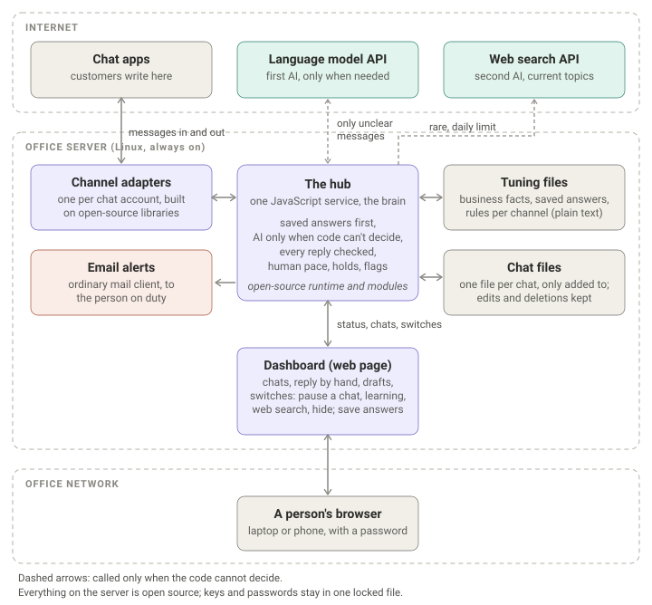

How one chat message is answered: saved answers in plain code first, the AI only when code cannot decide, every reply checked before it is sent. Drag sideways for the notes on the right.

The parts of the hub: one service on an office server, open-source libraries to the chat apps, plain files for its knowledge and its chats, a dashboard for the person in charge. Drag sideways for the right column.